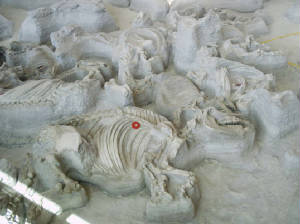

|
| STAN, THE LARGEST MALE T. REX IN THE WORLD |
|
| The Black Hills Institute of Geological Research, Hill City SD |
"Stan" was found in South Dakota by Stan Sacrison
about five years before digging finally began in April, 1992. Stan (the human) was told earlier that the bones were "only
a Triceratops". The skeleton was in very hard rock and difficult to get out. Not only did the team from the Black Hills Institute
find their second T. rex, but during this dig they also uncovered over 1,000 examples of fossil leaves and palm fronds
- some were so well preserved that they were used as templates for the plastic leaves on display at the prehistoric exhibits
in Denver's museum.
Click Here To Learn More About "Stan"
| SUE, THE LARGEST FEMALE T. REX IN THE WORLD |
|
| Field Museum of Natural History, Chicago IL |
"Sue" is the largest, most complete, and best
preserved Tyrannousaurs rex ever discovered. This combination of size, completeness, and quality or preservation makes
Sue one of the most important fossils in the world.
"Sue" was discovered by Susan Hendrickson in the Black Hills of South Dakota in 1990 while working with a team from the Black
Hills Institute, and after years of legal battles, was auctioned at Sotheby's in New York City.
The skeleton is over 90% complete. The more complete a skeleton is, the more information it contains and the more it can teach
about how a T. rex lived. Most of Sue's bones are so well-preserved that 67 million years after her death, you can
still see fine detail surface details.
Click Here To Learn More About "Sue"
| JANE, 11-YEAR OLD JUVENILE T REX |
|
| Burpee Museum, Rockford IL |
What's a nice T. rex like "Jane" doing in Rockford,
Illinois? "She's" there because the excavation team from Rockford's Burpee Museum of Natural History unearthed the juvenile
Tyrannosaur rex in Hell Creek, Montana, and brought her bones to Rockford.
In life, "Jane" would have been about 7.5 feet tall at the hip and 21 feet long, or about half the height and length of a
full-grown T. rex. It is estimated she was 11 years old when she died. The skeleton is acclaimed to be the most complete
adolescent T. rex in the world.
Click Here To Learn More About "Jane"
Although not QUITE the Cretaceous Era, this
happened a just a few years ago, comparatively speaking...
A volcano in southwest modern-day Idaho spread a blanket of ash over a very large area. One to two feet of this powdered glass
covered the flat savannah-like grasslands of northeastern Nebraska. Compare this to about the one inch of ashfall from the
1980 eruption of Mount St. Helens.
Most of the animals which lived in this area survived the actual ashfall, but as they continued to graze on the ash-covered
grasses, their lungs began to fill up with the abrasive powder, which eventually killed them.
The smaller animals died first (smaller lung capacity) and finally, perhaps three to five weeks later, the last of the rhinos
perished. (that's right... Rhinos.. in Nebraska!) Their bodies were quickly covered by the blowing and drifting ash.
Undisturbed except by an occasional scavenging meat-eater, the skeletons of these animals are preserved in their death positions,
complete with evidence of their last meals in their mouths and stomachs, and their last footsteps preserved in the sandstone
below.
Click here to learn more about Ashfall Fossil Bed State Park
| ASHFALL STATE PARK |

|
| Buried In Volcanic Ash 12 MYA |
DR. BECKMANN'S PERSONAL EXPEDITIONS
The following pics are from the ongoing adventures of Dr. Beckmann's field trips. We swear
no one was killed or injured in the making of these photographs.
CLICK TO ENLARGE
| THE DOC AT NATIONAL FOSSIL EXPO 30, 33, 34 |
|
| Western Illinois University, Macomb IL |
| WAUGH DIG, WYOMING, JULY 2006 |
|
| Camarasaurus Femur, 6'8" Tip To Tip |
| WAUGH DIG WITH PALEONTOLOGIST PETER LARSON |
|
| This Guy Dug Up Sue, But Needs Better Taste In T-Shirts |
To Become A Supporting Member, Empty Your Bank Account And Mail It To Us. Find Out How By Contacting Us At
CretaceouStudies@aol.com
or CretaceouStudies@yahoo.com or CretaceouStudies@gmail.com TODAY!
CONTINUE TO NEXT PAGE
|